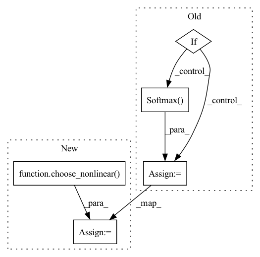

Pattern ID :1760

Before Change
self.rnn = nn.LSTM(n_bins, hidden_channels, num_layers=num_blocks, batch_first=True, bidirectional=bidirectional, dropout=dropout)
self.fc = nn.Linear(num_directions*hidden_channels, n_bins*embed_dim)
if mask_nonlinear == "sigmoid":
self.mask_nonlinear2d = nn.Sigmoid()
elif mask_nonlinear == "softmax":
self.mask_nonlinear2d = nn.Softmax(dim=1)
else:
raise NotImplementedError("")
self.take_log, self.take_db = take_log, take_db
After Change
if mask_nonlinear == "softmax":
kwargs["dim"] = 1
self.mask_nonlinear2d = choose_nonlinear(mask_nonlinear, **kwargs)
self.take_log, self.take_db = take_log, take_db
self.eps = eps
In pattern: SUPERPATTERN
Frequency: 3
Non-data size: 5
Instances
Fragment ID: 4440595
Project Name: tky823/dnn-based_source_separation
Commit Name: 6333394de0e49d076fa5e5f6d06d7f145ec8bcec
Time: 2021-11-22
Author: delta9guitar97@gmail.com
File Name: src/models/danet.py
M Class Name: DANet
N Class Name: DANet
M Method Name: __init__(11)
N Method Name: __init__(11)
M Parent Class: nn.Module
N Parent Class: nn.Module
M File Name: src/models/danet.py
N File Name: src/models/danet.py
M Start Line: 48
M End Line: 55
N Start Line: 49
N End Line: 54
'>
Before Change
self.map = nn.Conv1d(bottleneck_channels, n_sources*num_features, kernel_size=1, stride=1)
self.gtu = GTU1d(num_features, num_features, kernel_size=1, stride=1)
if mask_nonlinear == "relu":
self.mask_nonlinear = nn.ReLU()
elif mask_nonlinear == "sigmoid":
self.mask_nonlinear = nn.Sigmoid()
elif mask_nonlinear == "softmax":
self.mask_nonlinear = nn.Softmax(dim=1)
else:
raise ValueError("Cannot support {}".format(mask_nonlinear))
def forward(self, input):
After Change
else:
raise ValueError("Cannot support {}".format(mask_nonlinear))
self.mask_nonlinear = choose_nonlinear(mask_nonlinear, **kwargs)
def forward(self, input):
Args:
'>
Fragment ID: 4440592
Project Name: tky823/dnn-based_source_separation
Commit Name: 87afd25f53e66db234ad9349e8fdedc0061d33b1
Time: 2021-11-13
Author: delta9guitar97@gmail.com
File Name: src/models/dptnet.py
M Class Name: Separator
N Class Name: Separator
M Method Name: __init__(15)
N Method Name: __init__(15)
M Parent Class: nn.Module
N Parent Class: nn.Module
M File Name: src/models/dptnet.py
N File Name: src/models/dptnet.py
M Start Line: 253
M End Line: 262
N Start Line: 253
N End Line: 262
'>
Before Change
if mask_nonilnear == "sigmoid":
self.mask_nonlinear = nn.Sigmoid()
elif mask_nonilnear == "softmax":
self.mask_nonlinear = nn.Softmax(dim=1)
else:
raise ValueError("Only supports sigmoid and softmax, but given {}.".format(mask_nonilnear))
self._reset_parameters()
After Change
"dim": 1
}
self.mask_nonlinear = choose_nonlinear(mask_nonilnear, **kwargs)
self._reset_parameters()
def _reset_parameters(self):
'>
Fragment ID: 4440590
Project Name: tky823/dnn-based_source_separation
Commit Name: dde2365c3685653c33be298429c28543495869b2
Time: 2021-12-12
Author: delta9guitar97@gmail.com
File Name: src/models/tasnet.py
M Class Name: Separator
N Class Name: Separator
M Method Name: __init__(10)
N Method Name: __init__(10)
M Parent Class: nn.Module
N Parent Class: nn.Module
M File Name: src/models/tasnet.py
N File Name: src/models/tasnet.py
M Start Line: 340
M End Line: 343
N Start Line: 349
N End Line: 356